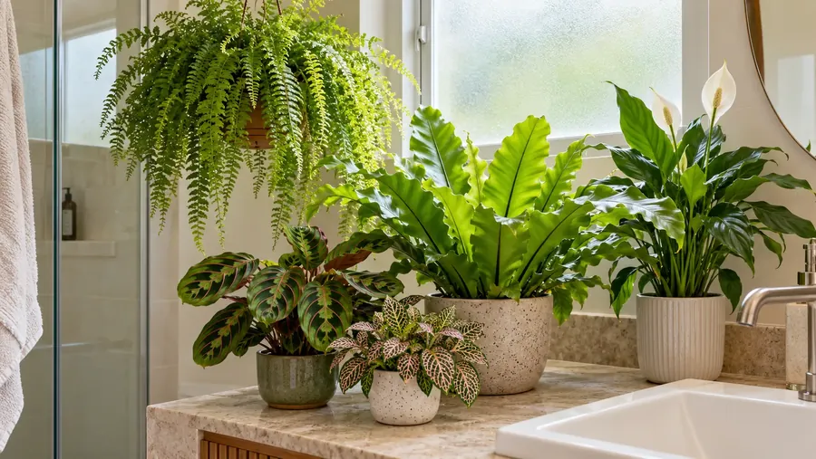

🌿 Conhecendo as plantas tropicais!
As plantas tropicais costumam ser originárias de regiões quentes e úmidas, como florestas. Muitas têm folhas grandes e bonitas.

🌿 O que a planta tropical gosta?
Antes de conhecer melhor essas plantas, descubra duas coisas importantes para cuidar delas:
Água
Muitas plantas tropicais gostam de solo levemente úmido, mas não encharcado. Observe a terra antes de regar.
Luz
Muitas preferem muita claridade, mas sem sol forte batendo direto nas folhas. A necessidade varia de acordo com a espécie.
Importante: úmido não é o mesmo que encharcado! Mesmo plantas que gostam de umidade precisam de um vaso com furos, para o excesso de água sair.
🌿 O que torna uma planta tropical especial?
O clima tropical é quente e costuma ter bastante chuva. Muitas plantas dessas regiões crescem à sombra de árvores maiores, em florestas.
Folhas grandes
Folhas largas podem ajudar a captar a luz que chega por entre as árvores da floresta.
Gostam de umidade
Muitas se adaptaram a lugares úmidos, com chuvas frequentes e ar mais carregado de água.
Vivem sob as árvores
Em florestas, muitas crescem protegidas da luz mais forte, recebendo claridade filtrada.
🔎 Detetive das tropicais!
Toque nos tópicos para descobrir como cada detalhe ajuda essas plantas a viver em seu ambiente.
🍃 Por que as folhas são tão grandes?
Folhas grandes oferecem mais área para captar luz. Isso é útil em florestas, onde parte da claridade é bloqueada pelas árvores.
🌧️ Por que elas gostam de umidade?
Muitas vêm de regiões com chuvas frequentes. Por isso, costumam se dar bem em lugares com o ar mais úmido.
🟤 O que são pontas marrons nas folhas?
Podem ter várias causas, como ar muito seco, falta ou excesso de água. Observar o ambiente ajuda a descobrir o motivo.
🧼 Por que limpar as folhas?
Poeira acumulada pode atrapalhar a captação de luz. Um pano úmido e macio costuma ajudar, com o cuidado de um adulto se a planta for grande.
🪴 Como cuidar de uma planta tropical?
Cada espécie é diferente, mas alguns cuidados são comuns a muitas tropicais.
Claridade sem sol forte
Muitas gostam de luz clara e indireta. Sol muito forte pode queimar as folhas de algumas espécies.
Solo úmido, não encharcado
Regue quando a terra começar a secar, conforme a necessidade da planta. Evite deixar água parada no vaso.
Cuide da umidade do ar
Em lugares muito secos, algumas plantas sofrem. Agrupar plantas pode ajudar a manter o ambiente mais úmido.
Não coma nem mastigue
Algumas plantas tropicais podem fazer mal se forem mordidas ou engolidas. Lave as mãos depois de mexer nelas e peça ajuda a um adulto em caso de dúvida.
🧠 E agora, pequeno jardineiro?
Imagine que você tem uma planta tropical com as pontas das folhas marrons. O ar da sala está muito seco, mas o solo está úmido. Regar mais seria a melhor ideia?
O que vale a pena observar?
Descobrir a resposta
💡 Pontas marrons podem estar ligadas ao ar seco, à luz forte ou a problemas na rega. Se o solo já está úmido, regar mais pode não ajudar.
Observe o ambiente, a luz e a umidade do solo antes de decidir.
💡 Você sabia?
Muitas plantas de casa vêm originalmente de florestas tropicais. Para elas, a sala da sua casa é um ambiente bem diferente do lugar de origem!
E o Meu PlantAmigo?
O Meu PlantAmigo acompanha a umidade do solo para ajudar você a perceber quando a planta precisa de água. Plantas tropicais costumam gostar de solo levemente úmido, então acompanhar essa informação ajuda a evitar tanto a falta quanto o excesso de rega.
🌿 Você virou especialista em plantas tropicais!
Agora que você descobriu os segredos dessas plantas, teste seus conhecimentos no quiz.
Fazer o quiz